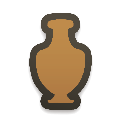
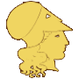
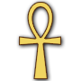
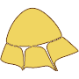

RTR: Imperium Surrectum
RTR: Imperium SurrectumMenelaites-Prosopites Nomoi
Its settlement is Naukratis, held at the campaign start by Ptolemaic Empire (Eastern Hellenistic). That page has the town — its size, its population, what is built there and what it can raise. This one is the land.
People: Dorian 30%, Ionian 30%, Egyptian 20%, Aeolian 10%, Macedonian 10% · Trade goods: Pottery ×3, Papyrus ×2, Salt ×2, Hemp
Trade goods
| Trade good | Amount | Trade good | Amount | Trade good | Amount | Trade good | Amount | ||||
|---|---|---|---|---|---|---|---|---|---|---|---|
 | Pottery | 3 | Papyrus | 2 | Salt | 2 | Hemp | 1 |
See the trade goods reference for what each is worth and what it unlocks.
Resources and character
| People | Dorian 30%,  Ionian 30%, Egyptian 20%, Aeolian 10%, Macedonian 10% | Fertility | 13 / 14 | Terrain | Floodplains delta | Climate | Mediterranean |
| Irrigation | Irrigation river | Port | Port level 2 | Hazards and river trade | Rivertrade |
Which recruitment zones and homelands this region counts as (1)
These are the tags the building and recruitment files test on this region. Each one is a condition somewhere else — a unit that can only be raised in these provinces, a building level a homeland unlocks, a mineral the mines chain needs.
| Recruitment zones | Greek, Cyrenaica early |